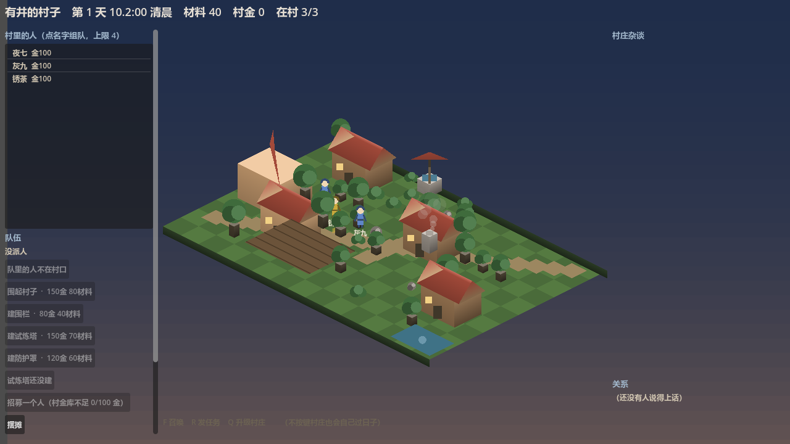
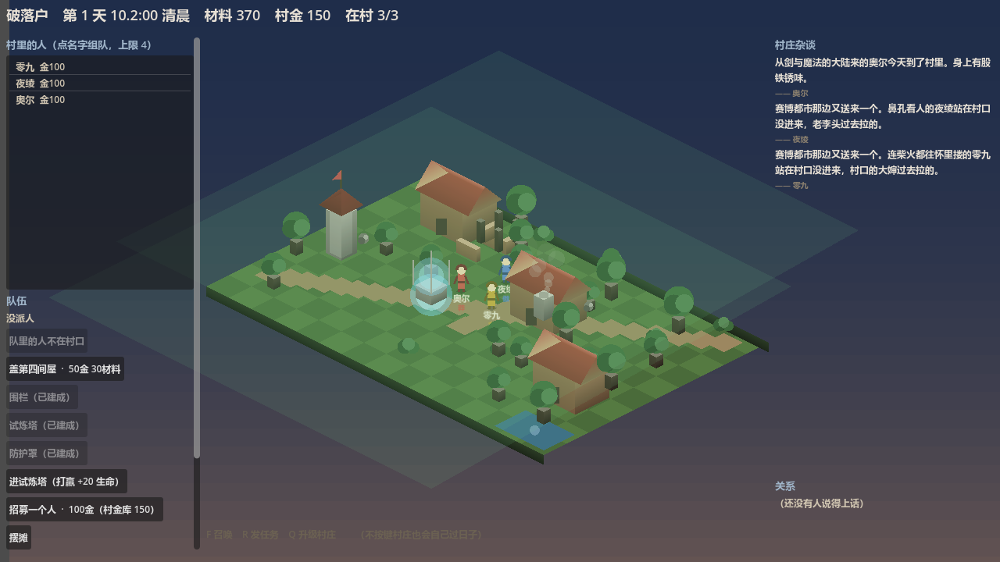
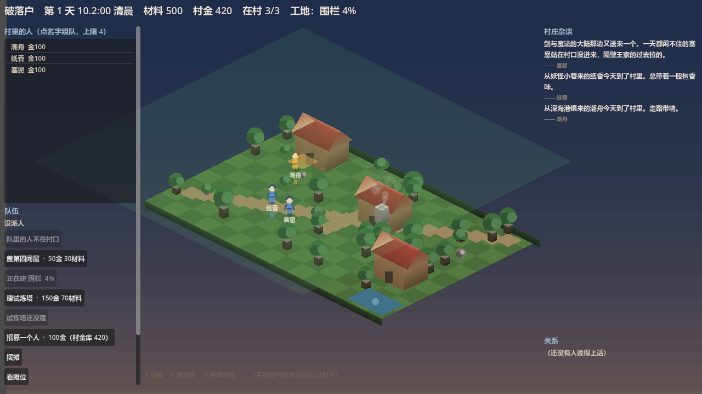
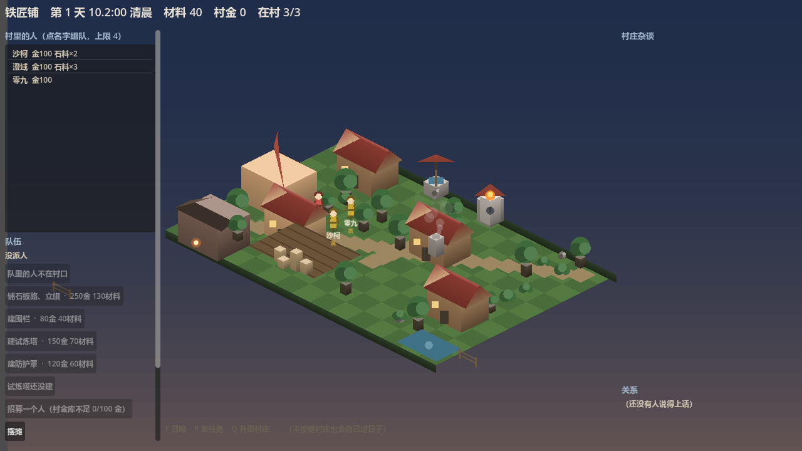
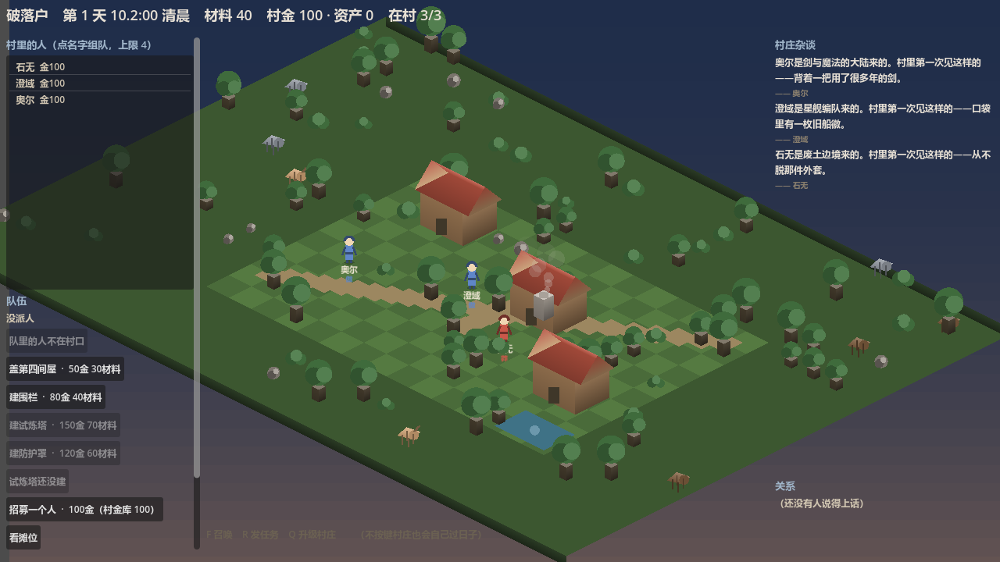
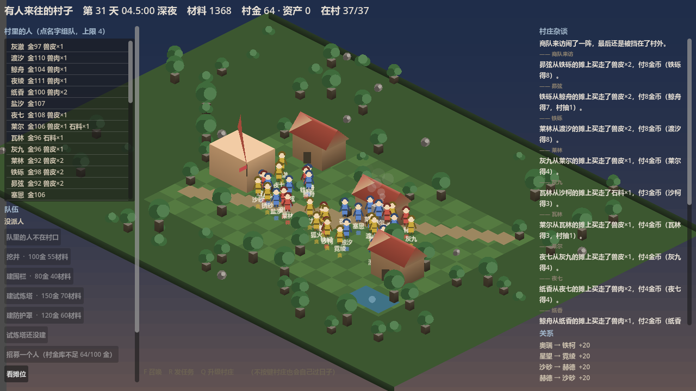
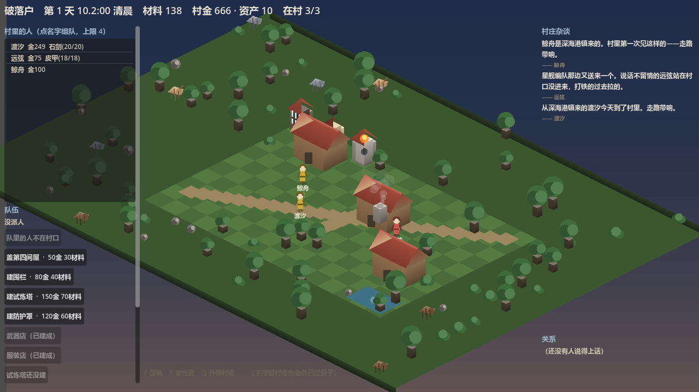
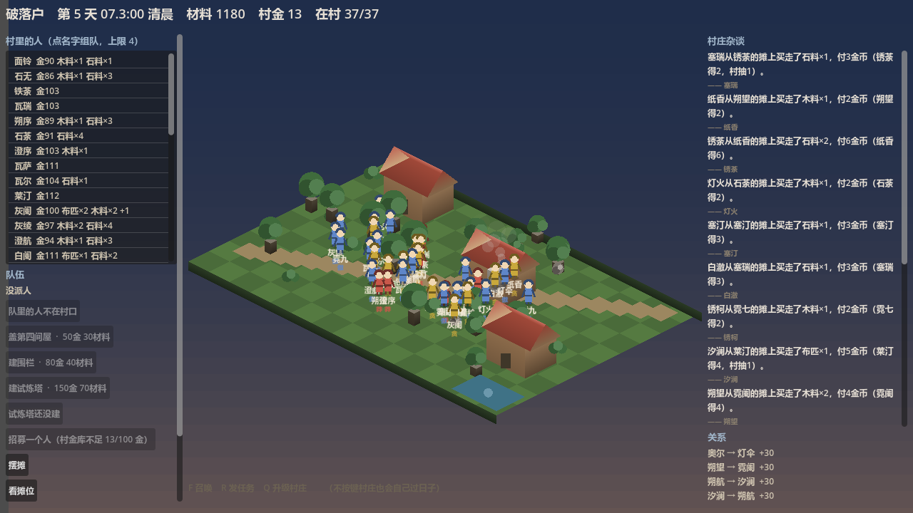

开发进度总览
2026-10-21 这一天：画面几乎没变，变的是规则与引擎。 22 条待定决策被拍板并落地，战斗从「掷一次 0.65 的硬币」换成了真引擎， 标定实测还揪出了几个只有跑起来才会露的坑 —— 后面这几个最典型： 难度目标从没被验过、关系变化没有幅度、回合数算了却被丢掉、 退款代码是死代码、「权重」根本不是玩家拿到的比例、 两层检查让守卫抓不到兜底。 最后一轮把建造流程也补上了：村里终于有两栋能盖的建筑；召唤也不再是白嫖。
今天改了什么（前 → 后）
左边是今天早上的样子，右边是现在。
| 今天之前 | 现在 | |
|---|---|---|
| 战斗 | 掷 0.65 硬币的占位实现；连「对手是谁」都没有 | 真引擎：七个插拔点 + 性格×投入度换算 + 怪物三档 + 中毒 + AI 集火 |
| 副本结果 | 1000 天里 9989 场全败、掉落 0、成交 0 | 能赢、能掉、能卖；首领胜率实测 86.7%（目标 70–90%） |
| 基础价格 | 5/3/8 占位值，还被标成了别的条目的编号 | 3/2/5（D-057 已确认）· 内外两份配置不许分叉 |
| 副本金币 X | 0.10 —— 是在已经不存在的旧游戏上测的 | 0.05 —— 两档实测的固定点（+0.37 / −0.30 金·天） |
| 九种建筑 | 九栋全部「待定」，谁都不敢动 | 七栋裁决不做（人口/采集点/装备三个大概念挡在门外）+ 两栋功能已定 |
| 改价的后果 | 开发者一改价，自检立刻红、CI 跟着红 | 换一张价格表跑自检，仍然全绿（机器背书） |
| 难度目标 | 写着「胜率 70–90%」，但从没验过它落在哪（实测 37.8%） | 首领 180 → 120，实测 86.7%；而且胜率对血量是台阶式的 ⇒ 只能扫，不能估 |
| 关系变化 | 有「友好/敌对」的字样，但没有幅度、没有触发源 | 纠纷 −10 / 成功 +10（等幅）· 触发源 = 副本失败；顺带补上 §7.2 的「关系恶化」事件 |
| 副本耗时 | 战斗算得出回合数却被丢掉，且丢了没有任何异常 | 1 回合 = 0.25 游戏内小时；读不出就大声失败，绝不悄悄当 0 |
| 建造 | 九栋全是「待定」，一栋也盖不了；「怎么建」没定 | 两栋能盖了（围栏=范围 / 试炼塔=加生命），工期由人力决定，建成永久生效 |
| 副本占多久 | 时长写死 11 小时，战斗花的时间完全没进时间轴 | 行程 = 路程 + 战斗（战斗耗时由真实回合数算）⇒ 「这趟占几天」算得出了 |
| 大事件 | 框架有了，但只有两个实例（兽潮 / 商队）⇒ 「通用」只是说说（§11.5 要求至少两个实例验证） | 三个实例：新增盗匪来袭，且形状刻意不同（强度固定 / 阶段少一个 / 不受那道闸） |
| 掉落权重 | 60/30/10 的占位值，而且「权重」与玩家拿到的量根本不是一回事 | 拍板的是玩家拿到的份数 50/30/20 ⇒ 权重反推为 100/90/60（精确对上） |
| 召唤 | 「招募一个人」白嫖，不花任何东西 | 花 100 金从村金库招 ⇒ 与「升级村庄」抢同一笔钱；钱不够就拒绝 |
| 召唤池 | 「抽中概率」写在表里，但抽取器有没有按它抽，从没被验过 | **不设设施 / 不命名 / 不分区**；并补上守卫：实测两万次，分布必须与权重相符 |
基线 18 章 · 模块全景
绿 = 做完；橙 = 规则/机制就位、还差内容或平衡；红 = 还没开工。格子里写的是还差什么。
这一天的时间线
-
21:00
两轮问卷：8 项决策 + 2 张表，全部拍板
价格、队伍人数、战斗形态、属性来源、伤害式子、命中、状态效果、敌方形态；加上战斗数值表与建筑/行为链表。
-
21:20
战斗真做出来了
占位实现连同「固定胜率 0.65」整类删除；领域层补上属性换算表、怪物三档、七个插拔点与回合引擎。IT-31 从「缺」变成「已写」。
-
21:30
标定揪出「副本从不变胜」
1000 天实测：9989 场全败、0 掉落、0 成交。根因是数值按 4 人小队算、而游戏只派 2 人 —— 而且那张表的算式我自己就验错了。按两人小队重算，并补了一条「两人小队必须赢第一关」的断言。
-
21:40
补跑标定 ⇒ 固定点浮出来了
X=0.05 两个种子都稳态（+0.37 / −0.30 金·天）⇒ 旧推荐值 0.10 是在已经不存在的旧游戏上测的，作废。顺带发现胜率 100% ⇒ 怪物再调难。
-
21:50
第三轮问卷：关系幅度 + 触发源 + 难度目标 + 耗时
四问全部按建议拍板：N=10 / M=10、触发源 = 同队副本失败、首领调弱到 70–90%、阶段耗时一并定。
-
21:55
难度目标从来没被验过
D-070 写着「胜率预计 70–90%」，可那是估值，没有人验过它落在哪 —— 实测只有 37.8%。而且采集器的胜率根本不能当难度指标（队伍轮换是确定性的，两个种子差 12 倍）⇒ 改用穷举 45 种两人队扫描：首领 180 → 120，胜率 86.7%。
🔴 顺带发现：胜率对血量是台阶式的（85~125 都是 86.7%，130~170 都是 60.0%）⇒ 「拍一个数字」很容易拍不准，必须扫。
-
22:00
关系规则落地，顺带补上一类杂谈事件
一次纠纷 −10、一次副本成功 +10（等幅 ⇒ 一次失败抵掉一次成功）；触发源 = 同队副本失败。顺带补上了基线 §7.2 十类里的「两名英雄关系恶化」 —— 它此前做不了，只因为「恶化的触发经历与变化量」没定。
⚠️ 幂等键用了独立的前缀：否则同一副本「先成功后失败」时，失败会被当成重复处理而静默跳过 ⇒ 该降的关系没降。
-
22:05
回合数算了却被丢掉
战斗引擎算得出打了几回合，但
Resolve只返回日志 ⇒ 回合数被丢掉（04插拔点 7 的原意正是报出它），而且丢了没有任何异常。修法不只是「把数传出来」，还包括读不出就大声失败 —— 悄悄当 0 的话，关系变化的时间坐标会整个塌掉。⇒ 1 回合 = 0.25 游戏内小时（三阶段 × 30 回合上限 ≈ 22.5 小时 ≈ 一天）。
-
22:10
守卫自己也要被验
新写的「首领胜率落在 70–90%」那条断言，变异时把区间放宽到 0–100 之后它照样绿 ⇒ 那条断言当时是装饰。改成断言具体哪 6 支队伍该输（全部含「挂机」）⇒ 与任何区间写法无关，放宽也照样红。
⇒ 变异矩阵 5/5，全量 827/827，verify-all 全绿。
-
22:40
第四轮问卷：建造流程四项，全按建议
沿用现有 5 级阶梯 + 两栋新建筑（两条路并存）/ 工期由人力决定 / 建成永久生效 / 试炼塔只加生命。
-
22:50
做起来才发现的三个坑
🔴 「扣了钱没建成」的退款分支原本是死代码 —— `CanStart` 先查了落点被占 ⇒ 放不下时在扣款之前就被拒 ⇒ 那条路径一次都走不到 ⇒ 看着在防半笔账，实际没防过。改把占位的权威判定交给放置本身，退款路径才真正可达。
🔴 试炼塔用普通档守卫等于没有门槛 —— 实测九种英雄原型全部能赢（连挂机都是 17 回合胜）⇒ 加成白送 ⇒ 改用精英档（只有「莽/肝」能过）。
🔴 「只加生命」原本没有落点 —— 服务只报「+20」时调用方爱怎么加怎么加 ⇒ 改成由服务算出「变成什么」，规则只有一处实现 ⇒ 守得住。 -
23:00
标定重跑：X=0.05 仍是固定点
D-072 改了首领血量 ⇒ 旧数据作废 ⇒ 三档 X × 两种子 × 1000 天重测：0.05 两个种子 +0.42 / −0.01 金/天（稳态），0.07 偏涨 ⇒ D-069 的推荐值依然成立，不用改。守恒律 1000/1000 天全部成立。
-
23:40
副本终于「占了时间」
副本时长原本是写死的 11 小时，而战斗是在行程结束那一刻整场解算的 ⇒ 战斗花的时间根本没进时间轴。
⇒ 战斗完全确定 ⇒ 出发时就解算，把战斗耗时并进行程，归来时用同一份结果结算（不重算 —— 重算会换掉副本标识，幂等键就变了，同一场可能发两次奖）。 -
00:20
「权重」根本不是玩家拿到的比例
拍板的是「玩家拿到的份数 50/30/20」，而抽掉落是「抽 K 次、同种份数累加」⇒ 玩家拿到的是权重 × 数量期望。石头每次给 1-2 份（期望 1.5）⇒ 直接填 50/30/20，实测是 60/24/16（石头占六成，与拍板意图相反）。
⇒ 权重反推为 100/90/60：100×1.5 : 90 : 60 = 150:90:60 = 精确 50/30/20。
🔴 这是实测两万次才发现的 —— 只断言「表里写着 50」的话，那只是把表抄了一遍。 -
12:40
召唤不再白嫖：花 100 金
§10 召唤池四项拍板：消耗=金币、消耗=100 金、不做稀有度（英雄是独特角色不是数值卡牌）、不做保底也不做重复。
⚠️ 扣的是村金库（与「升级村庄」同源）⇒ 花钱的地方有竞争。
⚠️ 村金库只有摆摊抽成一个来源 ⇒ 召唤不是开局就能用：得先有货 → 卖出去 → 抽成攒起来 → 才能招人 —— 这正是基线 §10.2「经营不是为了召唤才存在」要的样子。 -
14:20
召唤池定案：三条全是「不做」
不设设施（就一个按钮）· 不命名 · 不分区（六世界按权重一起抽）⇒ T-005 整条关闭，不再每轮重问。
⚠️ 「不命名」是真决定：`07` §4 的 B3 债写着「**一旦某个名字出现，它就成了结论**……开放问题被一个字符串悄悄关掉」⇒ 明确不设设施 ⇒ 代码里那个按钮不算结论。
⇒ 顺带补上守卫：「抽取器有没有按权重抽」这件事从没被验过 ⇒ 现在实测两万次，分布必须与权重相符。 -
15:10
世界与大事件：通用框架 + 兽潮 + 商队来访
整个游戏终于有了「外面正在发生什么」这一层：模板（这一类事件是什么样的）与实例（这一次）分离，事件按模板声明的阶段推进，结算幂等——存档、读档、再结算，后果不会发第二次。
🔴 「两个实例」不是凑数：商队刻意没有战斗、阶段更少 ⇒ 若框架把「进行中就打一场」写死，商队根本跑不起来。
🔴 又揪出一个守卫自己的坑：测试里推进阶段的循环没有护栏 ⇒ 阶段推进一旦被改坏，测试是挂死而不是跑红 ⇒ 那一档变异等于是「超时」，不是「看红」⇒ 已补护栏 + 超时保护。
⇒ 存档升 0.7（新增大事件实例与已应用的后果键）⇒ 旧档整份拒绝，不写迁移器。 -
17:20
大事件的后果真的落到村庄资源上了
兽潮不再只是「发生了一件事」：打赢给材料与金币，打输扣材料与金币（人畜无损——不扣英雄、不损建筑），而且兽潮的规模随村庄层级递增——村庄越强，来的怪越强，回报与损失同步放大。
🔴 顺手拆掉一个假战斗：守村英雄原先是写死的属性 ⇒ 谁去守村、村里有没有强者，对胜负毫无影响 ⇒ 现在用英雄自己的属性（含试炼塔的永久加生命）。
🔴 还发现一个只在算账时才看得见的陷阱：商队「低于市价」若不限量，玩家就能低买高卖无限套利 ⇒ 限量是这条规则能成立的前提。
⇒ 后果也从「一句中文」变成结构化的（种类 + 数量）—— 落地层不该去解析中文。
⚠️ 数值全部实测过：兽潮 = 三阶段逐场打、超时判负 ⇒ 缩放定 8% 时常规阵容到 5 级仍守得住（精英阶段已逼近回合上限）；10% 就会在 5 级超时判负、15% 4 级就守不住 ⇒ 数值不是拍脑袋定的。 -
18:40
商队真的摆摊了：低于市价、限时、限量
商队来访 ⇒ 村里开一个限时、限量、低于市价的摊，玩家用某个英雄的个人金币买（项目里没有「玩家化身」，钱和货都记在具体人名下）。左栏多了一个「看看商队」按钮。
🔴 钱为什么进村库：守恒律要求钱不能凭空消失 —— 付给「商队」就离开了这个世界 ⇒ 让钱全额进村库（商队的货款结算暂不做，抽成比例是开发者的决定）。
🔴 限量必须随存档走：不存「还剩多少货」⇒ 读一次档货就补满 ⇒ 限量形同虚设 ⇒ 这就是存档升 0.8 的唯一理由。
⇒ 限时也不另造计时器：窗口就是事件的「进行中」阶段，阶段机一到结算就自动关窗。 -
21:10
弱村子不再被罚，多栋房子也能同时盖
兽潮来之前先打一遍（纯计算、不留痕）问「守得住吗」—— 守不住就这次不来，并且告诉玩家一句「这一回兽潮没有来」，不让玩家以为游戏坏了。实测发现弱阵容在任何缩放下都必输，原来那等于每 7 天收一笔「必输的税」。
🔴 造房子这边还揪出一个真 bug：每栋在建的房子都拿到全村的人力 ⇒ 两栋同时盖时同一批人被算了两遍 ⇒ 人力凭空翻倍 ⇒ 现在人力只算一次再分配（多干活的先拿够、别栋分剩下的）。
⚠️ 另外记下一条诚实结论：基线 §14.3 那条「防御设施影响兽潮」当前不成立（试炼塔的加血几乎不改变胜负）⇒ 记为暂不适用，不是「已通过」。 -
22:30
两个「数据看不见」的口子补上了
🔴 建筑根本没进存档 ⇒ 读档后，玩家花 150 金 + 70 材料 + 工期盖的试炼塔凭空消失（连它给的永久加生命都还在、塔却没了）⇒ 现在建筑真的入档了（存档升 0.9，还带影响区——不然围栏读档后没地方摆摊），在建的也会继续盖，不会永远停在 40%。
🔴 大事件也没进经济流水 ⇒ 兽潮每 7 天动一次村库的钱与材料，却是村库收支的一个来源 ⇒ 不记它，标定看到的就是「钱莫名少了」，每次追问都会先怀疑错方向 ⇒ 现在流水里有这一行，且金额是机器可读的数字。
⚠️ 顺带记下两次「守卫是装饰品」的实录：测试写的是复制品（改生产代码它不受影响 ⇒ 五档变异全绿）；断言只说「整体非法」（关掉被测那条检查它照样绿，因为别的原因也非法）⇒ 都已修。 -
23:50
「贪」的战斗属性缺口：标定数据一直是偏的
跑标定时兽潮的预演在游戏循环里抛异常 ⇒ 查下去发现：游戏会创建三种性格（莽/傲/贪），而战斗参数表只有两种 ⇒ 任何「贪」的英雄一算战斗属性就抛异常。
后果不是崩溃，是两处静默的错：① 兽潮的预演每 7 天抛一次 ⇒ 那天的世界事件整段被跳过；② 采集里队伍含贪英雄的副本 ⇒ 被 catch 静默丢弃 ⇒ 实测 1958 场副本结算里约三分之一的英雄从没参过战 ⇒ 标定数据一直是偏的。
拍板「贪 = 攻 10 / 防 5」后重跑：成交 1505 → 4867 笔（×3.2）、成交额 7834 → 31122 金、村库 91 → 806（升级 3 → 5 次）⇒ ⚠️ 之前那批经济数字都是在「1/3 的英雄从不参战」的世界里测的。
守门：新增一条「游戏能创建的性格都必须在战斗表里」的守卫 —— 性格表与战斗表是两份数据，战斗表只查「有没有」不查「是不是全的」⇒ 缺一个只会在跑到它的时候炸，而那通常发生在没人看的压测里。 -
00:20
围栏能挡兽潮了：筑墙 ⇒ 兽潮弱一级
防御设施终于在兽潮里有分量：围栏每建成一座，兽潮的规模等级 −1（最低 0；在建的不算）。
为什么不是「给英雄加属性」：实测里弱阵容是「打不过」而不是「撑不住」⇒ 加属性未必管用；而「筑墙 ⇒ 兽潮弱一级」是一条能经营的策略（围墙 = 抗兽潮）。
⇒ 顺带把基线 §14.3 那条验收重新激活了：它要的「防御设施改变了至少一项结算指标」现在有指标可看（守不守得住、资源多少）⇒ D-082 当时记的「暂不适用」已撤销。
⚠️ 另外两件已拍板、但还没实现：副本难度保持 100%（不动）、自主采集每天 1 份材料（查代码发现它还差「材料进背包 + 自动卖出」两截 ⇒ 下一轮做）。 -
01:40
没参与副本的人，也有了一条收入链
自主采集：空闲英雄自己采石伐木 ⇒ 材料进他自己的背包（每天 1 份）⇒ 背包里有可卖的就自动开摊（按价格表定价、5% 摊位费 ⇒ 不新造经济）⇒ 别人买 ⇒ 他真的拿到钱。
🔴 顺带修掉一个我自己造成的回归：把采集器与游戏「统一成同一份实现」时，我漏了「卖光了就收摊重开」那一步 ⇒ 摊子永远是空的 ⇒ 市场直接停摆（成交 4867 笔 → 37 笔）⇒ 标定当场抓到了它。
⚠️ 但要如实说：收入链闭合了，分布问题没解决（英雄金币中位 6 → 4，最大 438 → 475）⇒ 我之前「根因是收入只来自副本」的诊断只对了一半 ⇒ 真正的机制是卖方与买方在转移，而没参与副本的人只有支出、没有产出（他们的钱买材料，材料却囤在村库里）⇒ 下一个要拍板的问题是「没参与的人买材料做什么」。 -
02:30
村庄收购站：钱从村库回流给闲人
拍板「村庄每天按市价收购在村英雄的采集品」，预算 = 村库余额 − 下一级村庄升级所需金币（村庄发展不被抽空）⇒ 新增
VillagePurchaseService，流水新增VillagePurchase行，杂谈一天一条汇总。
⚠️ 但实测发现它空转：村库的钱恰好在攒下一级升级（0 → 50 → 升级 −50 → 再攒 100 → …）⇒ 预算恒为 0 ⇒ 200 天只开张 2~5 笔 ⇒ 分布几乎没动（中位 4 → 5）。
⇒ 结论不是「实现有 bug」，而是两条拍板抢同一笔钱：升级是必须花的，收购就永远排不上 ⇒ 缺的是燃料 ⇒ 四条候选（升级金币改记村庄资产 / 收购不留升级金 / 给村庄外部收入 / 副本掉落物不进市场）已登记为07§3 T-011，待拍板。
顺带抓到一处「守卫是装饰品」：日闸门那条断言原本写成「连跑两轮 ⇒ 第二轮没钱」，而第一轮已把待售账清空 ⇒ 第二轮本来就没东西可收 ⇒ 去掉日闸门它照样绿 ⇒ 改成「第二轮前真的再采一份放进背包」才抓住。 -
03:10
商队的钱终于分清了：10% 进村库，90% 记为销毁
守恒律最后一笔收口：商队货款原先 100% 进村库（外面的钱与村里的钱混在一起，账目说不清）⇒ 拍板 村库抽成 10%，其余 90% 记为销毁（离开可流通池，必须进守恒律的「累计销毁」那一项，否则钱消失而账上没记 ⇒ 等式会破）。
⇒ 快照的「累计销毁」= 升级销毁 + 商队销毁（另单列一个字段）；流水新增CaravanTrade行（总额 / 村抽 / 销毁，三笔机器可读）—— 不并进交易行：摊位是「村抽 5%」、商队是「抽成 + 销毁」，混在一起会弄坏那条等式。
⚠️ 如实记录：标定（headless）里商队成交 0 笔（没人点商队）⇒ 这条规则目前靠单测 + 变异保证，实机成交要等验收。 -
03:25
兽潮弱阵容：保持现状（不改代码）
拍板「守不住就不触发，触发了也只要 8% 缩放 + 温和代价」⇒ 代码零改动，只是把「不改」记下来，免得下一轮又把它当成待办。
⚠️ 仍然存在的现象：标定里兽潮一次都没来 —— 它只在「守得住」时出现，而标定用的村子（37 个闲人）守不住 ⇒ 它在自动化标定里永远测不到。 -
04:05
升级花掉的钱不再销毁：村庄有了「资产」，收购站终于有燃料
拍板「升级村庄花掉的金币不销毁，改记村庄资产累计」⇒ 钱变成了建筑（仍在世界上，而且可以再花）⇒ 守恒律改为
Σ英雄 + 村库 + 村庄资产 + 累计销毁 = 初始 + 累计发放；收购预算 = 村庄资产 + 现金里超出「下一级升级所需金币」的部分（升级的钱永远不动）。
⚠️ 老档兼容：旧档没有「村庄资产」这一项 ⇒ 读档时补记（规则住在SaveGame.VillageAssetToRestore，纯函数可单测）⇒ 不需要升版本，玩家的存档照常能读。
🔴 顺带修掉一个真 bug：「预算不足时清掉待售账」⇒ 那批采集品永远失去被收的机会（200 天只开张 23 笔）⇒ 改成只扣买走的那几份 ⇒ 64 笔 / 282 金。
⚠️ 但中位只从 4 动到 5~6 ⇒ 🔴 真正的堵点不是「收入」，是「支出没有出口」：闲人收入 ≈ 1.2 金/人/天（被背包上限 + 市场吸收量卡住），支出 ≈ 2 金/人/天 ⇒ 结构性赤字 ⇒ 下一轮要拍板的是「材料要不要有用途」。 -
05:10
材料终于有用途了：这一条把「钱在缩」按住了
拍板「村庄建造/修理优先消耗村民背包里的材料，按市价付钱给他们」⇒ 新增
MaterialProcurement：钱从村庄资产出（升级要的那笔永远不动），材料直接被建造消耗，不进村库材料池（那个池子已经堆了 7.4 万份）。
这一条是决定性的：流通金从「−2.95 / −3.06 金/天（仍在缩）」变成「+0.00 / −0.21 金/天（≈0 稳态）」⇒ X=0.05 第一次真的是固定点；英雄金币中位 4 → 6 / 9；守恒律 200/200；市场成交没被挤死（5029 / 5377 笔）。
🔴 顺手抓到两个只有跑起来才会露的坑：① 同一英雄在采购单里出现多次 ⇒ 第二笔用「原钱包」算 ⇒ 覆盖掉第一笔的钱（实测 145 金只到账 44 金 ⇒ 守恒律当天就破了）⇒ 现在钱包链式累加；② 游戏里加了一道「逐日守恒律自检」，对不上当场打印，不再等标定事后才发现。 -
06:20
副本战利品改成全村共享：钱终于不集中在少数人手里
实测发现钱为什么集中在副本队身上：参战者把战利品在市场上卖掉，抽走闲人的钱 ⇒ 闲人买来的材料没有用途、钱白流，而副本队越攒越多（中位 6~9 vs 最大 586）。
拍板「副本战利品全村平分，参战者不再独占掉落」⇒ 战利品不再进任何人的背包， 折算成「材料」进村库材料池（副本成为村子的共同事业：材料进公库 ⇒ 建设更快 ⇒ 全村受益）； 参战者的金币报酬不变。
结果比预期还好：英雄金币 最小 0 → 41/48 · 中位 6~9 → 84/75 · 最大 586 → 182/177 ⇒ 分布从「几个人抢活钱、其余人几乎没钱」变成「大致均匀」（人均合计 98.9，接近初始的每人 100）； 成交笔均 1.10 → 2.62 份（市场更活跃）；守恒律 200/200。
⚠️ 如实记代价：参战者的参战动机变弱了（只剩每人 X 金），流通金从「稳态」回到略有收缩。 这两条是规则的副作用，要不要抵消需要单独拍板。 -
07:05
围栏不再固定在一处：玩家自己点地图选落点
点「建围栏 / 建试炼塔」⇒ 进入放置模式（不再直接开工）⇒ 鼠标移到哪儿， 就显示半透明的落点标记（绿 = 合法 / 红 = 非法）和围栏的影响区预览 ⇒ 左键放下、右键或 Esc 取消。
落点合不合法用本来就有的两条规则判：不跟已有建筑重叠（§13.7）+ 落在村子的地盘里（与摆摊同一把尺子）⇒ 不新造任何机制，只是把「落点由谁定」从常量改成了玩家的选择。
⚠️ 如实说清边界：画面上画的是「标记」不是「房子」 —— 村庄的房子是手绘装饰、不跟格位走， 若把落点画成房子，玩家会以为看到的房子位置就是真实格位 ⇒ 那是个谎。 落点真正影响的是规则（围栏的影响区 = 摊位能摆到哪儿、占位冲突）。 -
10:40
防护罩：基线里那栋「保护村庄」的建筑终于能建了
基线 §12.1 里开发者自己提过的建筑还剩六栋没做（井 / 铁匠铺 / 烟囱 / 土屋 / 武器店 / 服装店）⇒ 这一轮先做防护罩（唯一带明确功能的那栋）， 且按「最小可测版」：建成后兽潮规模降一级（与围栏可叠加 ⇒ 最多 −2）。
⚠️ 为什么不是「屏住村庄」：当前游戏里没有被攻击的东西可被罩住（兽潮输亏的是资源，人牲无损）⇒ 先取一条真的能写进验收的规则；「罩住谁」留到下一版。
职责也顺手分开：围栏 = 范围（决定摆摊能摆到哪儿）· 防护罩 = 专职防御（削弱来扰）⇒ 各降一级、各降各的。 落点同样由玩家自己点（D-093）⇒ 地图上看得见它罩到哪儿。 -
15:10
大事件从来没结算过 —— 一整轮工作在真实游戏里是空转
查标定数据时顺手看了一眼真实游戏日志里的大事件行 ⇒ 200 天、两个种子、五个样本，0 次结算。 而「兽潮一次都没来」这件事早就被记录过，当时归因为 D-082 的过滤器（「守不住就别触发」， 因为标定用的村子守不住）⇒ 看起来很合理 ⇒ 于是没人再往下查。
🔴 但商队（11 天）和盗匪来袭（9 天）没有那道闸门 ⇒ 它们本该发生 ⇒ 一次都没发生就说不通了 ⇒ 这才把「过滤器」的归因推翻。
🔴 根因是一个互相锁死：判定「刚创建、这次不动」用的是
Progress == 0，而Progress只有Advance()才会改 ⇒ 「刚创建 ⇒ 不推进」阻断了 Advance ⇒ 实例永远停在「预兆」 ⇒ 兽潮 / 商队 / 盗匪来袭全部从未结算 ⇒ D-079…D-096 一整轮的大事件工作，在真实游戏里全是空转。⚠️ 三道防线为什么都没抓到：单测是直接调
Advance的 ⇒ 绕开了那道闸门； 真机自检（--caravan/--bandit）也是手工推进的 ⇒ 同样绕开； 标定里「没事件」被归因为合理的过滤器 ⇒ 没人去查。 ⇒ 三条都是同一个毛病：测的都是「我直接驱动的那一段」，不是「游戏自己跑的那一段」。⇒ 修法：判据改成建立在时间上（「实例创建满一天」），规则搬进领域层（
WorldEventBook.AdvanceDaily）⇒ 可离线单测。 ⇒ 新增真机自检--event：逐日推进走真实日循环路径 ⇒ 阶段一路走到结算 ⇒ 村库材料 40→60。⚠️ 修完立刻撞上第二层：守恒律破了（200 天只有 8 天成立）⇒ 因为大事件发的钱是「从外面进来的」 ⇒ 补了两个科目（事件外部收入进等式右边 / 事件外部支出进等式左边）⇒ 守恒律恢复 200/200。 ⇒ ⚠️ 一条从未被触发的规则，看起来是「通过」的 —— 这是这次最该记住的一句。
-
14:00
一个早就在仓库里、一直被绕开的 bug
给基线 §14.3 写对照实验时撞上的：引擎写进决定性条目的回合数是「已经走完的回合数」， 而分胜负发生在某个回合进行中 ⇒ 少记 1 个回合 ⇒ 「第 1 回合就秒杀」会写成 0 ⇒ 读回器按契约抛异常 ⇒ 整场战斗崩掉。
🔴 这个坑仓库里早就有注释（
WorldEventConsequenceTests ：「不要用『一拳秒杀』的属性」） ⇒ 说明它一直被绕开、没人修。而我写 D-096 时也用同样手法绕过了它 （把怪物血量 20 改成 200 让测试变绿）⇒ 测试绿了、根因还在。
⚠️ 后果不只是「第 1 回合秒杀会崩」：任何在第 N 回合内结束的战斗，回合数都少记了 1 ⇒ 阶段耗时算少了 ⇒ 关系变化的「时间坐标」整个偏了一点。⚠️ 标定数据因此变了（战斗多打一回合 ⇒ 副本占更久）：流通金 −0.75 / −1.74 → −1.67 / −1.11 金/天，中位 84/86 → 93/82 ⇒ 两个种子从「一涨一跌」变成「都跌」⇒ 收缩比 D-094 当时接受的「轻微」更明显了一点 （这属于数值问题，不是规则问题）。
-
13:40
基线 §14.3 那条验收，第一次真的跑了
基线 §14.3 要的是：「防御设施通过明确的游戏规则改变了至少一项结算指标」。 这条验收一直标着「实测不成立」 —— 原因不是实验失败，而是 D-082 之前防御设施根本没有规则（试炼塔只加生命、兽潮只损资源） ⇒ 没有任何指标会变 ⇒ 没有实验可做。
⇒ D-085（围栏 ⇒ 兽潮规模 −1 级）+ D-095（防护罩 ⇒ 再 −1 级） 给了它明确的规则 ⇒ 现在能跑了，实测结果很直白： 一座围栏把兽潮的胜负翻过来了（规模 3 输 / 规模 2 赢）。
⚠️ 写实验时踩了两个坑（都记进台账了）：「回合数更少」不是单调的 （怪更强 ⇒ 可能死得更快）⇒ 断言改落在怪物属性上； 还需要一组刚好在边界上的阵容 ⇒ 实测扫出「攻 7 / 防 3 / 命 120」， 否则两组都赢、差异只剩回合数 ⇒ 断言会落空。
-
13:10
那口井，之前是画出来的
地图上确实画着一口井（升到第 2 级就出现），但查下去发现：村里根本没有这栋建筑 —— 它是手绘装饰，不跟格位走 ⇒ 「有井的村子」这句话当时是假的。 （与 D-097「三种建筑长得一模一样」是同一族问题：画面上有的东西，规则里未必有。）
现在井是真的建筑了，而且走的是「层级附带建筑」这条路 ——不要钱、不要工期、落点固定，与「玩家花钱自己建」的可建建筑分成两个目录 （混了就会出现「盖井要钱、升级又送井」这种自相矛盾）。
它在第 2 级出现：层级阶梯里那一级本来就叫「有井的村子」， 升到第 2 级那次施工的名字就叫「挖井」⇒ 不是实现者发明的。
顺带把「手绘装饰的那口井」删了——不然地图上有两口井，玩家会以为装饰那口也是能用的建筑。 老档（没有井的存档）读回来会按层级补记，不升存档版本、不写迁移器。⚠️ 如实说清边界：基线 §12.3 说「不能仅凭建筑名称自行指定功能」 ⇒ 井该有什么玩法效果还得你拍板 ⇒ 这一版只把它变成真的建筑，不加任何数值效果。

实机截图（D-099）：右上角那口带辘轳和顶棚的石井就是它 —— 现在它是村里真的一栋建筑 （存在、入档、占格位），而不是画出来骗人的。 -
12:30
一条「已确认」的规则，其实从来没被验过
基线 §12.4（开发者已确认）原话是「有些玩家还会在村庄周边，防护罩内自行摆摊」 ⇒「摆摊位置受防护罩范围约束」—— 但防护罩是 D-095 才加的建筑， 而摆摊位置守门是 D-033 写的 ⇒ 当年写守门时村里根本没有防护罩 ⇒ 这条规则至今没有任何守卫覆盖。
实测把事实钉出来：摆摊守门不区分建筑种类 ⇒ 防护罩也在放开摆摊范围 ⇒ 这与 D-095 文档写的「围栏 = 范围建筑、防护罩 = 专职防御，各降一级、各降各的」 不一致。
两条已确认的规则打架 ⇒ 实现者不能自己挑 ⇒ 拍板 B： 摆摊只认「范围类」建筑（围栏 + 市集），防护罩不参与。
落地时还牵出两处必须一起改：D-093 原话是「落在村子的地盘里 ⇒ 与摆摊用的是同一把尺子」 ⇒ 只改摆摊那一处的话，玩家能靠防护罩在村外盖楼、却不能在那儿摆摊。 另外地图上的影响区按颜色分了：绿 = 摊子能摆这儿 / 蓝 = 罩住了但摆摊不算 —— 两种都画成绿色就是在骗人。 -
12:05
围栏、试炼塔、防护罩：以前在地图上长得一模一样
自查发现的：D-093 落地时，地图上画的是「一块色块」 ⇒ 围栏 / 试炼塔 / 防护罩 看起来完全一样 ⇒ 玩家在地图上看不出自己盖了什么 ⇒ 「看得见自己盖了什么」这句话当时是假的。
现在改成按种类画各自的形状：围栏 = 木栅栏矮墙（它圈的是地）· 试炼塔 = 石塔挂红旗 · 防护罩 = 发光的蓝罩； 施工中画脚手架（没盖好就不是成品）。
顺带修了一个真问题：建筑原先永远画在最上层 ⇒ 会盖住站在它后面的英雄 ⇒ 现在并入深度排序。
⚠️ 守卫那边也踩到一次「装饰品」：那条「画法按效果判」的断言， 拿现成的三栋去比时，「按名字判」和「按效果判」结果一样 ⇒ 改坏实现它照样绿 ⇒ 补了一条「改名之后画法不许变」才真正抓住。
实机截图（D-097）：挂着红旗的白石塔是试炼塔、发着蓝光的罩子是防护罩、 一圈木栅栏是围栏 —— 三样一眼就分得清（以前它们是三块一样的色块）。 -
11:20
盗匪来袭：第三个大事件实例（形状刻意不一样）
基线 §11.5 原话：「框架的可扩展性需要至少两个实例来验证」⇒ 之前只有两个（兽潮 / 商队）， 现在是三个 ⇒ 而且第三个形状刻意与前两个不同：
① 强度固定，不随村庄层级增长（兽潮会 ⇒ 盗匪不会 —— 村子变大它也不变强）； ② 阶段比兽潮少一个（没有「后续影响」）⇒ 顺手证明了「阶段可以跳过」； ③ 不受兽潮那道「守不住就不触发」的闸约束（那道闸是兽潮特有的）。
它守的是五件事：打赢 ⇒ 缴获（材料 +20、金币 +10）；打输 ⇒ 被抢物资（材料 −10， 金币一分不动 —— 盗匪抢的是货，不是钱）；没人出击 ⇒ 必败。
✅ 数值已由开发者拍板（周期 9 天 / 固定档位 1 / 赢 材料+20 金币+10 / 输 材料−10），已登记参数台账。 -
07:40
放下之后看得见了：落点标记 + 影响区
补上 D-093 留下的尾巴：围栏放下之后，地图上要能看见它在哪、围到了哪儿 ⇒ 建筑位置画一个标记（蓝 = 已建成 / 琥珀 = 施工中）+ 半透明的影响区（裁在可见地图内）—— 围栏的作用就是「摆摊能摆到哪儿」，看不见就等于没放。
同时收紧一个边界：落点只能在可见地图上（市集的影响区很大，不限的话玩家会在「空里」放楼房）。
实机截图（D-093）：地图上那个琥现色的小方块就是玩家选的落点（「正在建 围栏 4%」）， 外面那块半透明的平行区就是围栏的影响区——摆摊能摆到哪儿，玩家一眼就能看懂。 -
16:20
「兽潮为什么不来」的旧答案，是错的
D-101 把事件结算修好之后重测：兽潮 200 天来了 28 次（= 200/7 次，一次不落）⇒ 那道「守不住就不触发」的闸，一次都没拦过 ⇒ D-084 / D-089 当年记的「村子守不住」是错的 —— 真实原因是那次阶段机死锁。
⇒ 本条只更正归因：历史原文保留、在原处加勘误注，不改任何代码、不改任何已拍板的决策。
⚠️ 顺带作废了一条结论：D-069 那个「0.07 是固定点」—— 那批数据是在 「大事件从未结算」的世界里测的 ⇒ 现在重测是 0.05 / 0.07 都缩、0.06 发散 ⇒ X 要重新拍板（正在跑 2000 天 × 4 种子的长窗口取数）。 -
17:05
专门查「哪条机制真的跑过」的探测器
D-101 的教训不是「那一个 bug」，而是一类 bug：没有任何一条检查问过「这条机制在真实游戏里到底跑过没有」。 单测直接调内部方法（跑的是「我直接驱动的那一段」）、真机自检也是手工推进（同样绕开）、 标定里「没事件」被归因为合理的过滤器（没人去查）⇒ 三条防线测的不是同一件事。
⇒ 新增
production/qa/feature-coverage.py：跑一次真实游戏，逐条机制核对 「它有没有在流水里留下痕迹」⇒ 没留下痕迹 = 待查的线索（不是失败的世界）。 首跑：副本 / 掉落 / 摆摊 / 收购站 / 大事件结算 / 经济快照全部有痕迹； 「按设计为 0」的（商队成交 = 玩家操作）把理由写在探测器里，以免「没跑过」与「按设计不跑」分不清。
⚠️ 探测器只看「有没有痕迹」⇒ 它报的线索还得人去查 —— 而查出来第一个就是真的（D-104）。 -
17:40
试炼塔的「永久」加成，读一次档就没了
D-103 的探测器顺手留下一条注记：「英雄的战斗属性（试炼塔给的 +20 生命）不入档」⇒ 去查 ⇒
HeroSave里根本没有这个字段 ⇒ 玩家打进试炼塔、拿到永久加生命 ⇒ 存盘 ⇒ 读档 ⇒ 加成归零。 而战斗那边照常吃它 ⇒ 读档后那个人默默地变弱了，全程不报任何错。⇒ D-074 拍板的是「永久」⇒「永久却不跟着存档走」等于那个词是假的。 ⇒ 修法：存档加字段（负数整份拒绝）+ 版本 0.9 → 0.10（旧档整份拒绝） + 转换抽成纯函数
TrialTowerBonusPersistence（照 D-083 的先例）
⚠️ 关键不在加字段，在抽函数：原来那对转换住在Main.Save.cs里 ⇒ 单测碰不到 ⇒ 从来没被验过 ⇒ 这就是它能潜伏至今的原因。
⇒ 变异矩阵 6/6，其中 2 档专门盯接线层（Main.Save.cs那两行只有真机自检抓得到 ⇒ 新增标记SAVETEST 0.10 PASS）。 -
18:30
井终于有用了：「有井的村子」从此不只是名字
基线 §12.3 明写「不得由实现者自行指定每栋建筑的功能」⇒ 上一轮把井变成真建筑时故意没给它任何效果 ⇒ 现在由你亲自指定：井 = 采集点。
规则：村里有井 ⇒ 采集的人每天多采 1 份材料；判定按效果而不是名字 （与「建筑要画成各自形状」「摆摊只认范围类」同一原则）。⚠️ 如实说明一处简化：选项写的是「井周围产出材料」， 而第一版按全村生效 —— 因为英雄没有格位坐标（只有画地图用的浮点位置） ⇒ 「谁站在井旁边」目前算不出来（与「村庄房子是手绘装饰、不跟格位走」是同一族缺口 ⇒ 要做真正的「周围」，得先给英雄格位坐标 ⇒ 另立项）。
⚠️ 它改的是经济：采集品是没参与副本的人的主要进项 ⇒ 井一到位，全村采集者的收入普遍 +1 份/天 ⇒ X 的拍板必须排在这一版之后。
🔴 顺带记一条守卫自己踩的坑：「按效果判」那条最初分不出「按名字判」 （变异照样绿 ⇒ 那是装饰品）⇒ 修法是把判定拆成吃定义的纯函数， 让守卫能喂进名字与效果互相矛盾的定义。 -
19:00
铁匠铺：第 4 级村庄终于不是「只涨了个名字」
你拍板「采集 +1（工具好，采得快）」⇒ 与井同类不同源（井 = 水，铁匠铺 = 工具） ⇒ 两者叠加 ⇒ 第 4 级村庄的采集加成 = +2 份/天。
为什么是第 4 级：层级阶梯里有一级就叫「铁匠铺」，而升级到第 4 级那次施工的名字 本来就叫「起铁匠铺」⇒ 不是实现者发明的，是基线自己的说法。 落点固定 (8,0) · 不要钱 · 不要工期 · 不是可建建筑（不能有两个来源）。
画法按 D-097 的规矩：石屋 + 跳动的炉火 + 屋前的铁砧 ⇒ 地图上看到那团橙光就知道是铁匠铺。
⚠️ 顺手钉住一条容易漏的坑：两栋的落点都是写死的 ⇒ 一旦写重，TryPlace失败而EnsureForTier静默跳过 ⇒ 村里少一栋却不报任何错 ⇒ 守卫专门钉了「不重叠」+「真放一次，两栋都在」。
实机截图（D-107）：第 4 级村庄 —— 右上角那间石屋（屋顶下有一团橙色炉火、屋前一块铁砧）就是铁匠铺； 再往右一点、带辘轳的那口是井。两栋都是村子里真的一栋建筑。 -
21:30
让标定器学会花钱 —— 顺手抓到一个「凭空造钱」的真缺陷
你拍板「先补标定器的花钱出口，在与真实游戏一致的世界里再拍 X」 ⇒ 采集器现在会盖房子：升级优先 → 有余钱就盖 → 盖完还得买得起下一级升级 → 围栏与试炼塔轮着盖 → 落点用玩家那把尺子。
🔴 结果一盖房就炸出了两个真缺陷（玩家自己盖房子一样会中招）： ① 盖房花掉的钱没有入账 ⇒ 守恒律当场破 ⇒ 修法：记进「村庄资产」（与升级同一语义）； ② 建造可能「半提交」⇒ 凭空造出 80 金 —— 实测 200 天里 143 天守恒律对不上， 差额正好等于一座围栏的造价（根因：采购先花掉现金 ⇒ 接着的扣款失败却被忽略） ⇒ 修法：权威判定只留一处（扣款失败 ⇒ 整体回滚，含把采购退回去）。
⚠️ 第一版修法是错的（做成「提交采购前把两笔现金一起预检」）⇒ 那是两层检查 ⇒ 变异「忽略扣款结果」照样绿 ⇒ 预检与回滚互相遮掩 ⇒ 最后只留回滚那一个权威判定。修完守恒律从 57/200 回到 200/200。
⚠️ 但盖房这个出口是有上限的：同一种建筑只能有一栋 ⇒ 采集器最多盖 230 金 ⇒ 真实游戏里唯一持续的出口是「召唤」（100 金/人），而它会让村庄长大 ⇒ 与「37 人代理值」冲突 ⇒ 人口要不要随村庄一起长，是下一个要拍板的事。
-
22:10
X 拍板：副本报酬终于不是「几乎为零」了
你拍板 X = 0.5 金（此前 0.05，这是第三次改 X） ＋ 判据从「流通金稳态」改成「分布健康 + 村庄花得出去」。
为什么必须改：① X 是弱旋钮（每 +0.01 X ≈ +0.2 金/天，而钱每天涨 3~11 金） ⇒ 「找变号那一档」的判据失效；② 更要紧的是 0.05 时参战者跑一场拿 0.1 金， 而采集一天是 3~9 金 ⇒ 副本的参战动机几乎为零 ⇒ 0.5 金让一场两人副本 = 1 金， 量级接近一天的采集 ⇒ 副本（基线 §8 的核心玩法之一）终于有回报。
新判据两条：① 分布健康（最富的人 ≤ 人均的 4 倍）② 村庄花得出去 （可花未花的钱不一路囤）。「流通金增长率」仍然记录，但不再是判据。
⇒ 为了让第 ② 条有数据：快照新增 「村庄可花却没花的钱」（= 村库现金 + 村庄资产 − 下一级升级要留的钱） ⇒ 报告直接显示「≈ 可召唤 N 人」⇒ 缺口一眼可见。 只是记账：采集器仍然不召唤 ⇒ 人口固定 37 人 ⇒ 标定数据仍可比。
-
23:20
数据全绿，但市场在第 100 天就死了 —— 我自己引入的回归
X=0.5 的 2000 天标定：守恒律 2000/2000、「分布健康」✅（最富 1.6 倍）⇒ 看着一切正常。但逐段看成交：头 100 天 1558 笔，之后 1900 天一笔没有 —— 副本照跑、收购照跑、事件照结算，只有「英雄之间互相买卖」死了。
⇒ ⚠️ 「分布健康」绿得没有意义：钱不流通 ⇒ 人人都在囤 ⇒ 分布当然均匀 ⇒ 判据必须补第三条「市场还在转」（已加进分析脚本）。
🔴 四组对照把它钉死了（200 天 / 成交按 50 天分段）： 关掉「采集器盖房子」⇒ 市场活（1392/1431/1417）；开着 ⇒ 第 100 天归零 ⇒ 元凶是 D-108 的采集器盖房，采集加成完全无罪。 根因链：盖房 ⇒ 村库现金被抽走 ⇒ 收购站没钱买材料 ⇒ 采集者的背包占满 ⇒ 采集全变白工 ⇒ 市场无供给。
⚠️ 还排除一个假设：临时放开「同一种建筑只能一栋」⇒ 市场照样死。⇒ 更深的问题是材料过剩 91 万份、而材料没有用途 ⇒ ⇒ 装备线（你已拍板的下一轮）正是解药：装备吃材料 ⇒ 材料有去处 ⇒ 采集者的包能清空 ⇒ 市场活着 ⇒ 整个经营循环活了。
-
23:50
回退采集器盖房：市场当场复活
你拍板「先回退『采集器盖房』（保留真缺陷修复 + D-110 记账）」⇒ 撤掉了采集器的盖房行为、 规则类与它的守卫，以及那个只用于归因的
--collectbuild开关。保留（这两个是真缺陷，与采集器无关、玩家一样会中招）： ① 盖房花掉的钱记进「村庄资产」（否则守恒律当场破） ② 建造不许半提交（扣款失败 ⇒ 整体回滚 ⇒ 否则凭空造 80 金）。
⇒ 实测（200 天 / X=0.5）：后半段成交 2705 笔（✅ 市场还在转）· 守恒律 200/200 · 分布 1.66 倍（✅ 健康）· 而「钱在囤」被 D-110 那笔账明确显示出来（可花未花 625 金 ≈ 可召唤 6 人） ⇒ 缺口不再被假绿掩盖。
-
00:30
试炼塔终于不是「可以无限刷」了
你拍板「给试炼塔加限制」⇒ 此前它没有任何限制：一个「莽 / 肝」的英雄可以 无限刷 ⇒ 永久加生命无上限 ⇒ 副本难度形同虚设 （采集器不去挑战 ⇒ 这个问题在标定数据里看不出来 ⇒ 是读码时发现的）。
规则：**每人每天一次**（第一次正常打、赢 +20 生命永久；同一天第二次不打； 第二天又能试）⇒ 成长变成稳定的节律，而不是无限刷。 ⚠️「今天已经试过」不是「输了」 ⇒ 单独一个跳过原因 ⇒ 界面单独说一句。
⚠️ 必须入档（存档 0.10 → 0.11）：不存「上次试炼的日号」⇒ 读档后那条限制就白设了（读一次档就能多刷一次）⇒ 与 D-104 同一族。
⇒ 守卫：单测 **6 条** ＋ 存档 **4 条** ＋ 真机自检两处（`--save` 验日号读回来、 `--build` 走界面的那条路 ⇒ 「界面忘了传日号」也抓得到）· 变异矩阵 5/5。 顺带把两个顶到 1200 行上限的文件拆了（纯搬家，调用点一个字没改）。
-
23:20
你点出来的三条：村金、摆摊按钮、地图（第三条在做）
① 「村金为什么一直为 0」 —— 量出来是开局那个环从 0 就转不起来： 村金只来自 5% 摊位税 ⇒ 税要有交易 ⇒ 「采集→收购站买走→英雄拿钱→英雄互相买→5%归村→收购站有钱」 闭在 0（实测第 3 天村库 0、第一次升级都打不通）。 ⇒ 给了 100 金启动资金（放现金里），并且顶栏同时显示「资产」 （升级花掉的钱变成资产 ⇒ 只显示现金是在骗玩家）。 实测：第 3 天村金 17、第 10 天 29、第 30 天 103 ⇒ 不再是 0，而且第 3 天第一次升级就打通了。
② 「摆摊按钮多余」 —— 你说得对：英雄的摆摊从 D-086 起就是自主行为 （每天日切自动开摊）⇒ 那个「石料:5」弹窗是 M7 的遗留，只会让玩家覆盖一件 本来就在自动发生的事 ⇒ 删掉了（「看摊位」保留，那是查看不是控制）。
③ 顺带被顶栏改动逼出来的一个真缺陷：存档前后「村庄资产」从 0 变成 333 ⇒ 读一次档，村庄凭空多几百金（真实路径：升满 5 级 → 收购站把资产花光 → 存盘 → 读档 ⇒ +750）。 根因：老档补记的判据是「资源里有没有这一项」⇒ 而资产为 0 时它压根不进存档 ⇒ 新档被当成老档。 ⇒ 判据改成版本号。⚠️ 教训：「某个键在不在」不是可靠判据（值可能恰好是 0）。
-
23:50
地图变大了，野外有野兽在走
你说「地图太小、应该大点，能看到村外的野兽」⇒ 原来那块地板只占屏幕中间一小块、 四周全是天空 ⇒ 根本没有「村外」 ⇒ 现在地板扩到 28×20、原点挪了 ⇒ 村子留在中间，四周多出一圈野外（暗绿底色 ⇒ 界线一眼可见）。
⇒ 野外有 8 只野兽（野猪 / 狼 / 鹿，鹿有角）：只生成在村外、 走不进村子、走不出地图、每天走一步（夜里活动）。 规则住在领域层（可离线单测）⇒ 画面只是「照着画」。
⇒ 顺带抓到一个坐标坑：格位可以是负数（地板有偏移）⇒ 「在不在地图上」不能用x >= 0。⚠️ 还没做：狩猎 —— 现在野兽只是「世界的样子」，还不能被打。 下一步让英雄真的出村去猎（同时也是「材料有去处」这条老问题的候选解药）。

实机截图（D-117）：地面铺满窗口 ⇒ 暗绿的是野外（左上有狼、中下有鹿、右边有野猪）， 亮绿棋盘格的是村子 —— 村外一眼可分，而且野兽不会进村。 -
凌晨
村里的人真的出村打猎了
你说「村里的人会跑出去狩猎」的后半截 ⇒ 现在狩猎是日常活动之一： 人人可选、不用你点（沿用摆摊那套自主行为），时长是采集的两倍（出村打猎更费时间）。
⇒ 战斗完全复用同一个解算器（副本、试炼塔、狩猎共用一份规则）⇒ 狼是精英档（只有强的人打得过）、野猪和鹿是普通档 ⇒ 实机里真的有人打不动狼 （日志：
HUNT 澄航 没能拿下 Wolf（空手而归））。
⇒ 打赢：野兽被移走 + 拿到战利品（新物品 兽皮 / 兽肉，进英雄自己的背包 ⇒ 能摆摊、也能被收购站收走 ⇒ 不是凭空生成的钱）；打输：野兽跑了、明天还能再猎； 野外没兽就白跑一趟；每天 35% 补一只 ⇒ 不会打空。⇒ 画面上：给英雄加了一次性目的地 ⇒ 猎人真的走到野兽那边再打 （⚠️ 钩子必须放在「过程事件不进杂谈」的早退之前，放后面就永远走不出村口）。
⚠️ 如实说明：狩猎现在只是另一条收入链，不是成长线 —— 英雄不会为了狩猎去强化装备，成长仍靠试炼塔的 +20 生命 ⇒ 下一步是装备线 （武器店 / 服装店 + 给铁匠铺真正的用途）。

实机截图（D-118）：暗绿的野外里有野兽在游走；左栏的货架上已经出现了 兽皮与兽肉（有人猎到了、摆摊卖、别人买走）⇒ 狩猎这条链真的闭合了。 -
下午
装备线：武器店、服装店，还有会坏的装备
你拍板：武器店 + 服装店、英雄自己买、穿上生效但会磨损、 商店自己盖、补货吃村库的材料和钱、修理只花钱。
⇒ 「会磨损」这条把铁匠铺救活了：它此前只有「采集 +1」， 现在第二个用途是修理（它的第二个效果 ⇒ 一栋建筑要两种效果 ⇒ 层级建筑加了一个效果字段）。
⇒ 仓库里原本只有「村民摊位」与「商队」两种交易，没有村庄自己的商店 ⇒ 新建了一条 村 → 英雄的链：每天每家店补 1 件（村库 1 份材料 + 5 金）， 英雄自己看「缺武器 / 缺衣服 / 装备坏了」⇒ 钱不够就不买。
⇒ ⚠️ 补货那 5 金记进「村庄资产」（钱变成了货架上的货） ⇒ 守恒律不破；买卖的钱进村库（村与英雄之间搬钱）。⇒ 坏掉的装备没有加成（不是减半）⇒ 所以英雄会先修再买； 每打一场战斗磨损 1 点（副本 / 试炼塔 / 狩猎）。 ⇒ ⚠️ 顺手修掉一个真缺陷：战斗属性此前有两处重复判定 （副本与试炼塔各抄一份）⇒ 装备再加一条就是第三处 ⇒ 症状是「数字对不上却不报错」 ⇒ 收敛成一个纯函数。
⇒ 存档升 0.12：装备、耐久、货架都入档 ⇒ 不存的话读一次档装备就凭空消失。

实机截图（D-119）：花名册行尾能看到 石剑(20/20)、皮甲(18/18) —— 穿什么、还剩多少耐久，一眼可见；左栏是 武器店（已建成）/ 服装店（已建成）。
现在的画面
这是刚才跑起来的实机画面（1280×720，采集器模式下的 37 人村庄）。诚实话：画面本身变化很小 —— 一天的进展在规则、引擎与数值里，不在美术上。但这一帧里能看见真的东西：一村人在赶集。

还开着的
- 召唤设施的形态（基线 §10.3）：第一版已定「不设设施」（D-078）⇒ B3 债仍开着 —— 以后要改成建筑时，必须先拍板名字
- 围栏的房子仍是手绘装饰：D-093 让玩家自己选落点了（地图上有标记 + 影响区）， 但画面上的房子不跟格位走 ⇒ 要让房子真的跟着走，是一个渲染大改
- 副本的「参战动机」变弱了：战利品全村共享（D-092）后，参战者只剩每人 X 金； 另外流通金从「稳态」回到略有收缩（战利品不再进市场 ⇒ 五分税进少）。 要不要抵消这两条，需要单独拍杼
- 大事件的具体后果：兽潮这一半已落地（D-080：赢给材料 + 金币、输只扣资源、规模随层级递增）；商队的临时摊位也落地了（D-081：低于市价 + 限时 + 限量 + 玩家可买）⇒ §11 的两个实例都能玩了
- 兽潮的数值已拍板：缩放 每级 +8%（实测出来的，不是拍脑袋）、赢 材料 40 + 金币 20、输 材料 15 + 金币 8、商队 八折 + 库存 30、在村全体英雄自动参战
- 基线 §14.3 那条对照实验，已经被 D-085 重新激活：§14.3 要验「防御设施影响兽潮」⇒ D-085 让围栏 ⇒ 兽潮规模 −1 级 ⇒ 防御设施真的改变了结算指标（规模等级 / 胜负 / 资源）⇒ 那条实验现在有指标可看（D-082 当时记的「暂不适用」已撤销）。
⇒ 仍开着的是另一半：§14.3 想看的「建筑损伤 / 英雄伤亡」两项指标当前不存在（第一版的后果是「只损资源、人畜无损」）⇒ 要它们得另立项。 - 弱阵容必输：实测「挂机」阵容在任何缩放下都必输（30 回合超时）⇒ 兽潮对弱阵容是必输的税。本轮已把失败代价压到材料 15 / 金币 8 兜住，但根因没解（可能的方向：太弱就不触发 / 允许「不守就不结算」）
- 「某次交易发生纠纷」仍缺：它要「次品 / 成色 / 真伪」机制 ⇒ 已裁决暂不做，要做就是新立项
- X 已拍板：X = 0.5 金（D-109，此前 0.05）⇒ 副本报酬终于不是「几乎为零」。 判据同步改成「分布健康 + 村庄花得出去」⇒ 「流通金增长率」不再当判据。 ⇒ 正在跑 2000 天 × 4 种子的新标定取数。
- 村庄的「持续花钱出口」只有一个：召唤（100 金/人） —— 盖房有上限（同一种建筑只能有一栋 ⇒ 最多 230 金）⇒ 采集器不召唤（人口固定 37 人 ⇒ 数据可比，D-110）， 但「本该花掉却没花的钱」已单独记一笔 ⇒ 缺口可见
- 井该有什么玩法效果：✅ 已定（D-105）= 采集点 ⇒ 采集每天多 1 份 （+1 已由你拍板，实测把经济从「缩」拉回「持平」）⇒ 铁匠铺也定了（D-107）= 采集 +1 ⇒ 第 4 级村庄采集 +2 ⇒ 剩下的建筑还有 土屋 / 烟囱 / 武器店 / 服装店四栋 （后两栋属「装备」族 ⇒ 要做就得推翻 D-066「暂不做」）